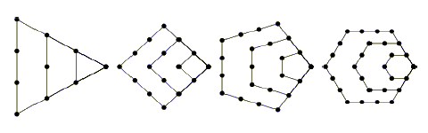

A polygonal number is a number which can be represented by a regular geometrical arrangement of equally spaced points, where the arrangement forms a regular polygon. Some examples are shown in the figure below.

The first figure shows the first 4 triangular numbers 1, 3, 6, 10. The next three show the first four square, pentagonal and hexagonal numbers, respectively. In general, k-gonal numbers are those whose points define a regular k-gon (hence triangular numbers are 3-gonal, square numbers are 4-gonal, etc.). We will define k as an index of the polygonal number. For this problem, you are to find numbers which are k-gonal for two or more values of k. We will call these numbers poly-polygonal.
Input will consist of multiple problem instances. Each instance will consist of 3 lines. The first line will be a non-negative integer n ≤ 50 indicating the number of types of polygonal numbers of interest in this problem. Note that this line may be longer than 80 characters. The next line will contain n integers indicating the indices of these polygonal numbers (all distinct and in increasing order). For example, if the first line contained the value 3, and the next line contained the values 3 610, then that problem instance would be interested in 3-gonal, 6-gonal and 10-gonal numbers. Each index k will lie in the range 3 ≤ k ≤ 1000. The last line of the problem instance will consist of a single positive integer s ≤ 10000, which serves as a starting point for the search for poly-polygonal numbers. A value of n = 0 terminates the input.
For each problem instance, you should output the next 5 poly-polygonal numbers which are greater than or equal to s. Each number should be on a single line and conform to the following format:
num:k1 k2 k3 ...
where num is the poly-polygonal number, and k1, k2, k3 ... are the indices (in increasing order) of the poly-polygonal number equal to num. A single space should separate each index, and you should separate each problem instance with a single blank line. The judge's input will be such that the maximum value for any poly-polygonal number will fit in a long variable.
10 6 7 8 9 10 11 12 13 14 15 1000 5 3 4 13 36 124 1 0
1216:9 12 1540:6 10 1701:10 13 2300:11 14 3025:12 15 1:3 4 13 36 124 36:3 4 13 36 105:3 36 171:3 13 1225:3 4 124